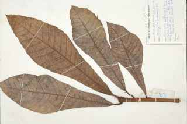

Images :



| Habit : | Large trees , up to 35 tall. |
| Leaves : | Leaves simple , alternate , spiral , clustered at twig ends; petiole stout, 3.8 cm long, canaliculate , ferruginous tomentose with 1 or 2 pairs of long, persistent , brown villous pubescent spurs ; lamina 19-44 x 7-20 cm, oblanceolate with upper half broadly rounded or triangular, subacuminate , lower half, base cuneate to acute , margin ciliate , coriaceous , ferruginous tomentose when young, pubescent beneath when mature; midrib ciliate above, flat; secondary_nerves ca. 30 pairs; tertiary_nerves reticulate . |
| Inflorescence / Flower : | Inflorescence axillary and terminal panicles , flowers polygamous . |
| Fruit and Seed : | Drupe , half embedded within hypocarp , 1-seeded . |